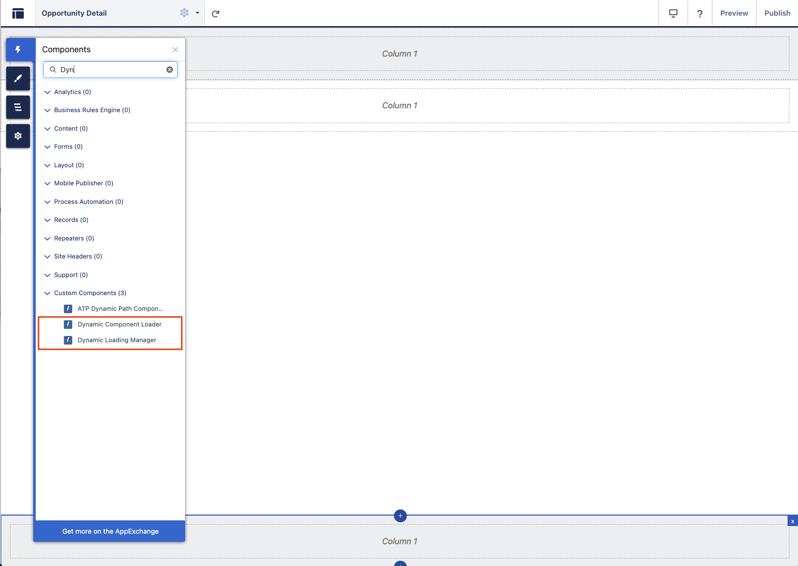
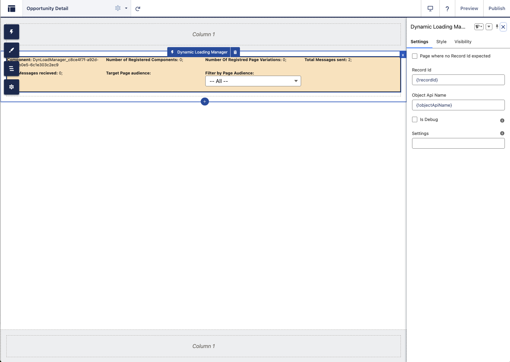
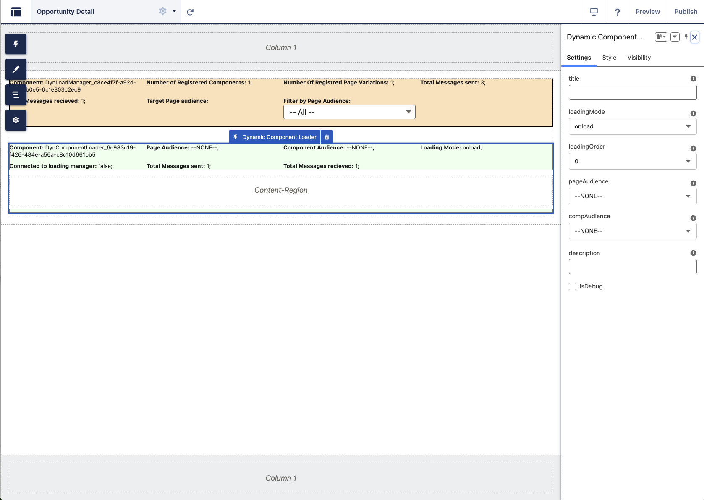
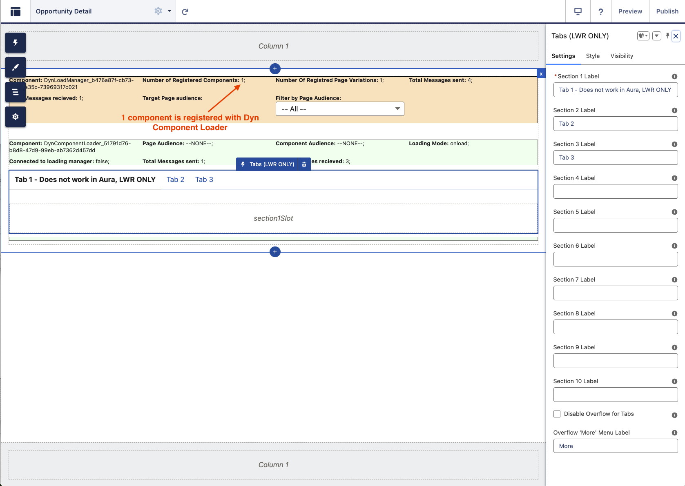
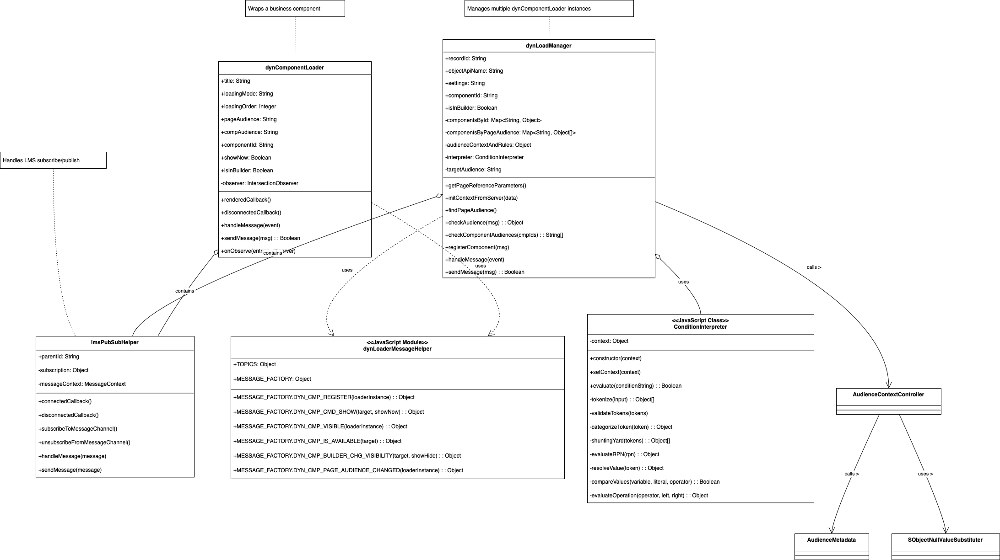
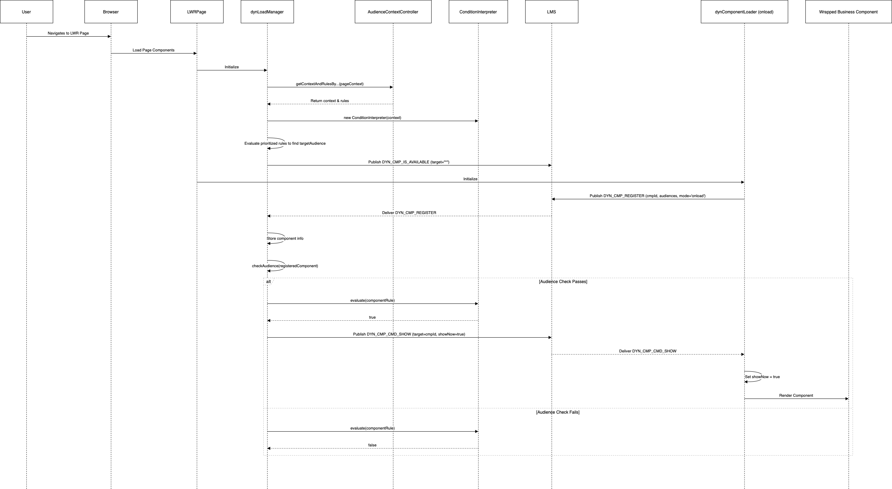
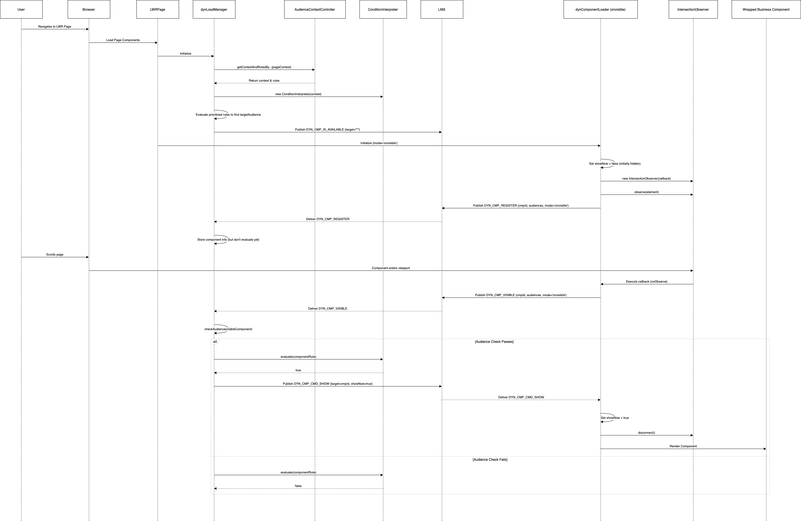
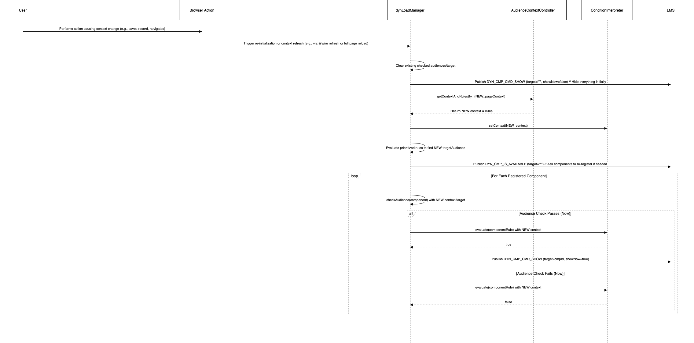

Salesforce Lightning Web Runtime (LWR) sites lack the built-in page variation functionality available in Aura sites. While LWR offers component variations, adapting existing Aura LWC components solely for this purpose can involve significant refactoring efforts. This necessitates a custom solution to achieve dynamic page and component visibility based on audience criteria within LWR sites.
This document outlines an architectural solution that implements page-level and component-level variations for Salesforce LWR sites. It leverages a proprietary conditional language evaluated by a central JavaScript interpreter to determine the visibility of specific components based on defined audience rules.
The core principle is:
This approach effectively ports the concept of Aura page variations to LWR by using a combination of custom LWC components, Lightning Message Service (LMS), and Apex controllers.
The solution comprises several key components working together to manage dynamic component visibility.
dynLoadManager (LWC):
AudienceContextController) upon initialization.
The context fetching depends on the page type (Named Page, Object Page,
Record Page).ConditionInterpreter) to evaluate the proprietary
conditional language defined in audience rules.dynComponentLoader instances
present on the page.LWR_Audience_Page_Level_Rule_Priority__mdt.showNow = true/false) to relevant
dynComponentLoader components via LMS messages.dynComponentLoader (LWC):
dynLoadManager upon
initialization or when requested via LMS, sending its
componentId, pageAudience,
compAudience, loadingMode, and
loadingOrder.<slot>).DYN_CMP_CMD_SHOW) from the
dynLoadManager.showNow flag received from the
dynLoadManager.loadingMode options (e.g.,
onload, onvisible). For
onvisible, it uses IntersectionObserver to
notify the dynLoadManager when it scrolls into view.pageAudience
property changes.lmsPubSubHelper (LWC):
UniversalTopicBasedChannel__c).messagereceived).sendMessage) for parent
components (dynLoadManager,
dynComponentLoader) to publish messages onto the LMS
channel.dynLoaderMessageHelper (JavaScript
Module):
TOPICS constants representing different message
types (e.g., DYN_CMP_REGISTER,
DYN_CMP_CMD_SHOW, DYN_CMP_VISIBLE).MESSAGE_FACTORY object containing factory
functions to create standardized message payloads for each topic,
ensuring consistent communication.AudienceContextController
(Apex):
@AuraEnabled methods
(getContextAndRulesByRecordId,
getContextAndRulesByObjectApiName,
getContextAndRulesByPageName) callable from
dynLoadManager.getUserCustomPermissions, Location).LWR_Audience_Resource__mdt custom
metadata. Uses SObjectNullValueSubstituter to handle
potential null values in queried data.LWR_Audience_Rule__mdt) and page-level priorities
(LWR_Audience_Page_Level_Rule_Priority__mdt) using the
AudienceMetadataProvider.AudienceRulesAndContext wrapper class for returning to the
LWC.AudienceMetadata (Apex):
AudienceMetadataProvider interface,
specifying methods to get rules, priorities, and resource field
definitions.RealAudienceMetadataProvider, a concrete
implementation that queries the LWR_Audience_Rule__mdt,
LWR_Audience_Page_Level_Rule_Priority__mdt, and
LWR_Audience_Resource__mdt CMDTs.SObjectNullValueSubstituter
(Apex):
Proprietary Conditional Language & Interpreter
(audience_rules_interpreter.js):
==,
!=, ~= (endsWith), =~
(startsWith)), logical operators (&&,
||), parentheses for grouping, and referencing context
variables (e.g., User.ProfileId,
Opportunity.RecordType.DeveloperName,
Permission == 'SomePermission'). It also supports
evaluating nested Audience rules.ConditionInterpreter
class parses the rule string (tokenization, validation), converts it to
Reverse Polish Notation (RPN) using the Shunting Yard algorithm, and
evaluates the RPN stack against the context provided by
dynLoadManager. The context includes Profile, Role,
Permissions, Location, Domain, Data (SObject data), and the map of
Audience rules.dynLoadManager
initializes.dynLoadManager calls
the appropriate method in AudienceContextController (Apex)
based on the page type (recordId, objectApiName, or pageName) to get
user/record context, all audience rules, and prioritized page-level
rules for the current page context.dynLoadManager initializes the
ConditionInterpreter with the fetched context and
rules.dynLoadManager evaluates the prioritized page-level rules
to determine the single targetAudience for the current page
view.dynComponentLoader instance initializes and sends a
DYN_CMP_REGISTER message via lmsPubSubHelper
containing its details (componentId, pageAudience, compAudience,
loadingMode).dynLoadManager receives the registration messages via its
lmsPubSubHelper and stores component details.loadingMode = 'onload', the dynLoadManager
immediately checks:
pageAudience matches the determined
targetAudience (or is null/empty).compAudience rule evaluates to true
using the ConditionInterpreter (or is null/empty).dynLoadManager sends a DYN_CMP_CMD_SHOW
message (via LMS) with showNow: true targeted at the
specific componentId.dynComponentLoader receives the message and sets its
internal showNow property to true, causing the wrapped
component in its slot to render.loadingMode = 'onvisible', the
dynComponentLoader uses an
IntersectionObserver. When the component becomes visible in
the viewport, it sends a DYN_CMP_VISIBLE message.dynLoadManager receives the DYN_CMP_VISIBLE
message.DYN_CMP_CMD_SHOW message. The loader then renders
the component and disconnects the observer.dynLoadManager provides controls to view components
associated with specific page audiences within the builder, sending
DYN_CMP_BUILDER_CHG_VISIBILITY messages.This section defines the syntax of the proprietary conditional
language used in the Audience_Rule__c field of the
LWR_Audience_Rule__mdt metadata type and evaluated by the
ConditionInterpreter.
The language allows expressing conditions based on user context, record data, and permissions. It supports logical combinations of comparisons.
rule ::= expression
expression ::= term { ('&&' | '||') term }
term ::= factor | '(' expression ')'
factor ::= comparison
comparison ::= variable comparator literal
| 'Audience' '==' literal (* Special case for nesting rules *)
variable ::= identifier { '.' identifier } (* e.g., User, User.Profile.Name, Opportunity.RecordType.DeveloperName *)
| 'Permission' (* Special context variable for Custom Permissions (Set<String>) *)
| 'Profile' (* Special context variable for User Profile Name (String) *)
| 'Role' (* Special context variable for User Role Name (String) *)
| 'Location' (* Special context variable for User Location (Set<String>) *)
| 'Domain' (* Special context variable for User Domain (String) *)
| 'Audience' (* Special variable for rule nesting *)
identifier ::= (alpha | '_') { alpha | digit | '_' } (* Standard identifier rules *)
comparator ::= '==' | '!=' | '=~' | '~=' (* equals, not equals, startsWith, endsWith *)
literal ::= string_literal | boolean_literal (* Number literals not explicitly handled in provided interpreter snippet *)
string_literal ::= "'" (character | escape_sequence)* "'" (* e.g., 'PARTNER_SALES_USER', 'true', 'GC' *)
boolean_literal ::= 'true' | 'false' (* Note: Often represented as strings like 'true'/'false' in examples, handled by interpreter *)
escape_sequence ::= '\\\'' (* Only escape sequence explicitly handled in provided tokenizer *)
alpha ::= 'a'..'z' | 'A'..'Z'
digit ::= '0'..'9'rule / expression: The
basic structure is a logical expression combining terms with
&& (AND) or || (OR). Parentheses
() can be used for grouping and controlling
precedence.term / factor: Represents
the conditions being evaluated, primarily comparisons.comparison: The core unit of
evaluation. It typically involves comparing a variable to a
literal using a comparator.
Audience: When the
variable is Audience, the == operator triggers
a recursive evaluation of the named audience rule specified by the
literal.Permission,
Location, etc.): When the variable is
a Set of strings (like Permission or
Location):
==: Checks if the literal string exists as
an element within the Set.!=: Checks if the literal string does
not exist as an element within the Set.=~ (startsWith): Checks if at least one
element within the Set starts with the literal
string.~= (endsWith): Checks if at least one element
within the Set ends with the literal string.variable: Represents data points from
the context.
User,
Account, Opportunity, Campaign,
Lead, etc., or a special variable like
Permission, Profile, Role,
Location, Domain, Audience..) to access fields on the context
objects or their related records (e.g.,
User.CurrentPersona__c,
Opportunity.RecordType.DeveloperName). The specific objects
and fields available depend on the page context and the fields defined
in the LWR_Audience_Resource__mdt metadata.comparator: Defines the type of
comparison:
==: Equal to (handles standard comparison and Set
membership check).!=: Not equal to (handles standard comparison and Set
non-membership check).=~: Starts with (for strings, or checks if any element
in a Set starts with).~=: Ends with (for strings, or checks if any element in
a Set ends with).>,
<, >=, <= for numerical
or date comparisons are not explicitly supported by the
provided audience_rules_interpreter.js code snippet.literal: Represents fixed values.
Primarily string literals enclosed in single quotes (e.g.,
'Active') or boolean values (which may be represented as
strings 'true'/'false' in rules and converted
during evaluation).User.CurrentPersona__c == 'PARTNER_SALES_USER'
(Variable User.CurrentPersona__c, Comparator
==, Literal 'PARTNER_SALES_USER')Permission == 'ChatterEnabled' (Special Variable
Permission (Set), Comparator == (membership
check), Literal 'ChatterEnabled')Permission != 'ChatterEnabled' (Special Variable
Permission (Set), Comparator !=
(non-membership check), Literal 'ChatterEnabled')Audience == 'Core_Perm_Sets' (Special Variable
Audience, Comparator ==, Literal
'Core_Perm_Sets')Campaign.RecordType.DeveloperName =~ 'ChildCampaign'
(Variable Campaign.RecordType.DeveloperName, Comparator
=~ (startsWith), Literal 'ChildCampaign')( Opportunity.AccountSub_Type__c == 'ENT' || Opportunity.AccountSub_Type__c == 'GOV' ) && User.Region__c == 'GC'
(Uses parentheses, ||, and &&)lmsPubSubHelper
is a generic utility.dynLoadManager from the dynComponentLoader
instances.dynLoadManager and the
ConditionInterpreter, making it easier to manage and
update.onvisible loading
mode provides performance benefits by deferring the rendering (and
potential data fetching within the wrapped component) until the
component is actually needed.dynLoadManager mitigates this somewhat.@AuraEnabled(cacheable=true)) helps.Audience Association:
LWR_Audience_Rule__mdt with an
Audience_Id__c and the Audience_Rule__c (the
condition string).LWR_Audience_Page_Level_Rule_Priority__mdt, linking an
Audience_Rule_Id__c to a target (SObject__c
representing an object API name or a page name) and assigning a numeric
Audience_Rule_Priority__c. Lower numbers have higher
priority.LWR_Audience_Resource__mdt, mapping an
Sobject_API_Name__c to a JSON array of
Fields_Array__c.dynComponentLoader instances have @api
properties pageAudience and compAudience
(corresponding to Audience_Id__c values) configured in the
Experience Builder.LMS Message Structure
(dynLoaderMessageHelper.js):
topic field to categorize messages (e.g.,
DYN_CMP_REGISTER, DYN_CMP_CMD_SHOW).payload object containing relevant data:
DYN_CMP_REGISTER:
{ cmpId, pageAudience, compAudience, loadMode, loadingOrder }DYN_CMP_CMD_SHOW:
{ targetCmp: string | string[], showNow: boolean }DYN_CMP_VISIBLE:
{ cmpId, pageAudience, compAudience, loadMode, loadingOrder }DYN_CMP_IS_AVAILABLE:
{ targetCmp: string | string[] } (Manager announces
readiness)DYN_CMP_BUILDER_CHG_VISIBILITY:
{ targetCmp: string | string[], showNow: boolean } (For
Builder UI)DYN_CMP_PAGE_AUDIENCE_CHANGED:
{ cmpId, pageAudience }Interpreter Logic
(audience_rules_interpreter.js):
tokenize: Breaks the rule string into tokens (literals,
variables, operators, parentheses). Handles string literals and basic
escape sequences.validateTokens: Performs basic syntax checks (e.g.,
parenthesis matching, operator placement).categorizeToken: Identifies if a token is a literal, a
context variable (like Profile, Role,
Permission, Location, Domain), an
SObject field access
(Data.<SObjectName>.<FieldName>), or an
Audience reference. Validates against the provided
context.shuntingYard: Converts infix notation tokens to RPN
(postfix) using Dijkstra's Shunting Yard algorithm, respecting operator
precedence (==, !=, =~,
~= > && > ||).evaluateRPN: Evaluates the RPN expression using a
stack.resolveValue: Retrieves the actual value for variables
from the context map provided by
dynLoadManager.compareValues: Handles the actual comparison logic for
==, !=, =~, ~=. It
specifically handles comparisons against Set values (like
Permissions, Location) and nested Audience evaluations
(recursively calls evaluate for
Audience == 'SomeOtherAudience').evaluateOperation: Performs the logical
(&&, ||) or comparison operations
based on the operator token.dynComponentLoader Processing:
connectedCallback: (Implicitly initializes registration
process via renderedCallback).renderedCallback: Ensures registration message
(DYN_CMP_REGISTER) is sent via LMS. Sets up
IntersectionObserver if loadingMode is
onvisible.handleMessage: The core message handler. Filters
messages based on topic and whether the
targetCmp in the payload matches its own
componentId or is "*". Updates its
showNow state based on DYN_CMP_CMD_SHOW.
Handles builder visibility toggles via
DYN_CMP_BUILDER_CHG_VISIBILITY. Responds to
DYN_CMP_IS_AVAILABLE by re-registering.onObserve: Callback for
IntersectionObserver. Sends DYN_CMP_VISIBLE
message when the component enters the viewport.disconnectedCallback: Attempts to clean up the
observer, though a comment notes potential issues with this firing
reliably in the Experience Builder.Design Patterns:
dynLoadManager and
dynComponentLoader instances.dynLoaderMessageHelper acts
as a Message Factory, providing functions to create consistently
structured messages.ConditionInterpreter
class implements the Interpreter pattern to process the proprietary
conditional language.AudienceMetadata
uses an interface (AudienceMetadataProvider) and a concrete
implementation (RealAudienceMetadataProvider) to abstract
the source of metadata (Strategy or Provider pattern).AudienceContextController could be seen as a Facade,
simplifying the process of gathering diverse context information (user,
record, metadata) for the LWC.This section outlines the steps to configure the dynamic visibility solution, starting with the necessary metadata setup and followed by the Experience Builder configuration.
Metadata Setup Steps (Pre-Configuration):
Before configuring components in the Experience Builder, the underlying audience rules and supporting metadata must be defined in Salesforce Setup:
Define Audiences and Personas:
Create Audience Rules:
LWR_Audience_Rule__mdt Custom
Metadata Type.Audience_Id__c (e.g.,
Partner_Sales_Users,
High_Value_Opportunities_View). This ID will be used later
in the Experience Builder configuration.Audience_Rule__c field using the proprietary language
syntax. Examples:
User.Profile.Name == 'Partner Community User'Permission == 'Can_Edit_Orders'Opportunity.Amount > 100000 && Opportunity.IsClosed == falseAudience == 'Region_NorthAmerica' (for nesting
rules)Prioritize Page-Level Audiences:
LWR_Audience_Page_Level_Rule_Priority__mdt Custom Metadata
Type.SObject__c field to the relevant SObject API
Name or Page Name.Audience_Rule_Id__c to the ID of a Page
Audience rule defined in step 2.Audience_Rule_Priority__c number (lower
numbers have higher priority). The first rule in the priority order that
evaluates to true for a user will determine the active Page Audience for
that page view.Define Required Data Resources:
LWR_Audience_Resource__mdt Custom
Metadata Type.Sobject_API_Name__c to the relevant object (e.g.,
User, Opportunity, Account).Fields_Array__c, provide a JSON string array
containing all the field API names needed for evaluation from that
specific SObject, including relationship fields (e.g.,
["ProfileId", "Country", "UserRoleId"] for User,
["Amount", "IsClosed", "RecordType.DeveloperName", "Account.Type"]
for Opportunity).recordId
is available), you need to define resources for the record's SObject
type in addition to the 'User' object. For other page types
(Object Pages, Named Pages), typically only resources for the 'User'
SObject are needed unless rules specifically reference other global
context data.Experience Builder Configuration Steps:
Once the metadata setup is complete and all components (LWCs, Apex, LMS Channel) are deployed, you can configure the components on the LWR page:
 Figure 1: Dyn Load Manager and Dyn Component Loader components available in Experience Builder.
dynLoadManager to the Page:
dynLoadManager component onto the page
canvas.dynLoadManager
per page. Figure 2: DynLoadManager component and its properties in Experience Builder.
dynComponentLoader:
dynComponentLoader onto the page where the
conditional component should appear.dynComponentLoader. Figure 3: Dyn Component Loader component (without internal business component) and its properties in Experience Builder.
 Figure 4: Dyn Component Loader component containing an internal LWR Tabs business component, with its properties shown.
Configure dynComponentLoader
Properties:
dynComponentLoader.Title / Description (Optional,
Builder Only): For identification.Loading Mode: onload or
onvisible.Loading Order (Optional): Number for
ordering components with the same load mode.Page Audience: Enter the
Audience_Id__c (from step 2 of Metadata Setup) defining the
page variation this belongs to. Leave blank or use "--NONE--" if
applicable to all page variations.Component Audience: Enter the
Audience_Id__c (from step 2 of Metadata Setup) defining
specific conditions for this component. Leave blank or use "--NONE--" if
always visible within its Page Audience.Repeat for All Dynamic Components: Repeat steps 2 and 3 for every component requiring conditional visibility.
Preview and Test:
By following these metadata and Experience Builder steps, you configure the dynamic behavior based on page and component audiences.
This diagram shows the Custom Metadata Types involved and their relationships.
Key aspects of the Custom Metadata relationships (PK=Primary Key, FK=Foreign Key; no explicit referential integrity is used)
LWR_Audience_Rule__mdt: This is the core definition of
an audience rule. It contains a unique identifier
(Audience_Id__c) used in the LWC configuration and the
actual rule expression (Audience_Rule__c) that the
ConditionInterpreter evaluates.LWR_Audience_Page_Level_Rule_Priority__mdt: This Custom
metadata determines which LWR_Audience_Rule__mdt should be
considered the target audience for a specific page context (defined by
SObject__c, which holds either an SObject API name or a page name). It
links directly to an LWR_Audience_Rule__mdt via
Audience_Rule_Id__c and sets its priority. Multiple rules
can be defined for the same context, but the one with the lowest
Audience_Rule_Priority__c that evaluates to true becomes
the active page audience.LWR_Audience_Resource__mdt: This Custom metadata
informs the AudienceContextController which SObject fields
are required for evaluating the rules associated with a given
Sobject_API_Name__c (which could be 'User' or a record's object type).
This ensures the necessary data is queried and made available in the
context map for the ConditionInterpreter. The relationship
to LWR_Audience_Rule__mdt is conceptual: the fields listed
here are expected to be used within the Audience_Rule__c
strings associated with that context.
Note: Apex classes (AudienceContextController,
AudienceMetadata, SObjectNullValueSubstituter)
are shown conceptually in relation to dynLoadManager.


